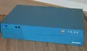

The Indy
Introduction
The Indy (codename “Guinness”) is a workstation officially released in 1993 to succeed the Indigo. Designed and marketed by Silicon Graphics, it represented for the firm the culmination of its efforts to establish itself on the publishing, CAD, or more simply multimedia market, at a time when these fields were already dominated by Apple.
Sold as a “cheap” workstation, its excellent technical capabilities in 2D graphics, as well as equipment rare on the workstations of the time, such as digital and analog inputs/outputs and an S-Video input, or even unprecedented, such as a video camera (the famous IndyCam) and an ISDN adapter allowing videoconferencing, built its reputation.
The machine comes in a desktop format (40.6 × 35.6 × 7.6 cm for a weight of 7 kg) and its pretty pastel blue case, sturdy and well designed, can support a good-sized CRT screen without showing the slightest sign of weakness.
Hardware
The Indy supports 4 types of 64-bit MIPS processors, on an IP24 motherboard integrating 8 memory slots each able to support 4 to 32 MB of 72-pin ECC SIMM RAM (i.e. a maximum of 256 MB of a very common type of RAM).
Processor Frequency L2 Cache R4000PC 100 MHz No R4000SC 100 MHz 1 MB R4400SC 100 MHz 1 MB ^ 150 MHz ^ ^ 175 MHz ^ ^ 200 MHz ^ R4600PC 100 MHz No ^ 133 MHz ^ R4600SC 133 MHz 512 KB R5000PC 150 MHz No R5000SC 150 MHz 512 KB ^ 180 MHz ^ There are only 3 types of video cards for this machine, which is little compared to other SGI systems, with an entry-level card supporting a palette of only 8-bit colours.
Name Characteristics HW transformation Entry 8-bit colours No XL24 24-bit colours No XZ 24-bit colours Yes The machine originally has only one hard drive in 50-pin SCSI format, as well as a (somewhat particular) floppy disk drive internally.
As for the other main peripherals, it supports PS/2 keyboards/mice, the current PC standard, and has a 10 Mbit/s network interface in RJ45 format. Only the video output, in 13W3 format (usually), can be a problem when buying such a machine today, because it requires either a screen with a 13W3 input (if possible, an SGI screen, while we’re at it), or an adapter with a SOG-compatible screen (sync on green, see this site), which is not very hard to find either.
Software
Like all SGI systems of the time, the machine runs IRIX, SGI’s proprietary OS.
Sold with IRIX 5.1, this machine can today take advantage of the last major version of IRIX, 6.5, provided you are lucky enough to carry out one of the last upgrades and not go too high in the minor versions (6.5.22 seems to work; an R5000 with the maximum of RAM is recommended).
Otherwise, IRIX 6.2 runs very well on slightly weaker Indys (mine is one of them).
Conclusion
To conclude, it is a workstation of sturdy design with relatively capable, even innovative hardware (in the context of the time).
A point rare enough at SGI to be worth mentioning, it stands out in its last versions (a Sony-brand power supply change in the most recent ones) for its silence, broken only by the noise of the hard drive.
Despite a power that would make some people smile, it therefore remains very pleasant to use and lets you enjoy IRIX for a derisory purchase price (very good Indys can be found for 50-75 euros).
For more information, I have made my sources available (all in English unfortunately).
My Indy
I own an Indy with an R4600SC 133 MHz processor, 64 MB of RAM and an Entry / XL8 graphics card.

It is therefore not a racing beast (I still have half of the RAM slots to fill), but it remains a nice configuration and very smooth under IRIX 6.2.nezetic 1# hinv -v Iris Audio Processor: version A2 revision 4.1.0 1 133 MHZ IP22 Processor FPU: MIPS R4600 Floating Point Coprocessor Revision: 2.0 CPU: MIPS R4600 Processor Chip Revision: 2.0 On-board serial ports: 2 On-board bi-directional parallel port Data cache size: 16 Kbytes Instruction cache size: 16 Kbytes Secondary unified instruction/data cache size: 512 Kbytes on Processor 0 Main memory size: 64 Mbytes Vino video: unit 0, revision 0, IndyCam not connected Integral ISDN: Basic Rate Interface unit 0, revision 1.0 Integral Ethernet: ec0, version 1 Integral SCSI controller 0: Version WD33C93B, revision D Disk drive: unit 1 on SCSI controller 0 Graphics board: Indy 8-bitSources :
en.wikipedia.org/wiki/SGI_Indy
hardware.majix.org/computers/sgi.indy
sgistuff.net/hardware/systems/indy.html
www.obsolyte.com/sgi_indyby Cédric TESSIER on
{kind=link}